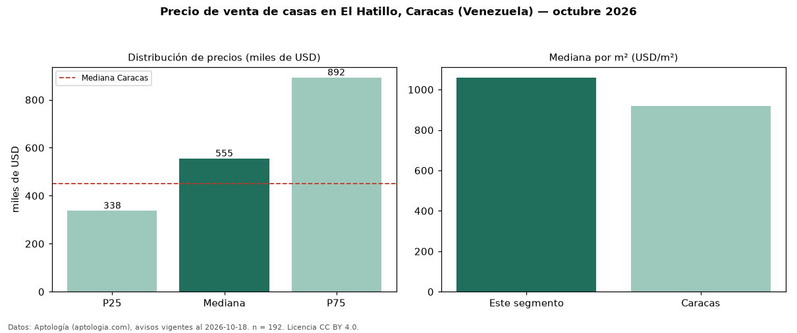

Precio de venta de casas en El Hatillo, Caracas (Venezuela) — octubre 2026
Con 192 avisos vigentes, el precio mediano de casas en venta en El Hatillo, Caracas (Venezuela) es USD 555.000. Frente a la mediana de Caracas para casas (USD 450.000), queda 23 % por encima. Por metro cuadrado, la mediana es USD 1.059/m² (n = 186 avisos con área), 15 % por encima de Caracas (USD 920/m²). La mitad central de los avisos va de USD 337.500 a USD 892.500 (razón 2,6), una dispersión alta. El área mediana anunciada es 551 m². El segmento con más oferta es el de 3 o más habitaciones (189 avisos, mediana USD 570.000). Por precio mediano es el puesto 2 de 5 zonas de Caracas con al menos 30 avisos de casas en venta (USD): en la franja media. Datos: Aptología (aptologia.com), CC BY 4.0 — https://www.aptologia.com/ve/venta/caracas/el-hatillo. Archivos: PDF, CSV con las cifras y gráfica PNG.

| Avisos únicos | 192 |
|---|---|
| Percentil 25 | COP 337.500 |
| Mediana | COP 555.000 |
| Percentil 75 | COP 892.500 |
| Mediana por m² | COP 1.059 |
Fuente: avisos vigentes de portales inmobiliarios recopilados por Aptología, deduplicados (mínimo 30 avisos únicos por celda). Precios pedidos, no cerrados. Fecha: 2026-10-18.